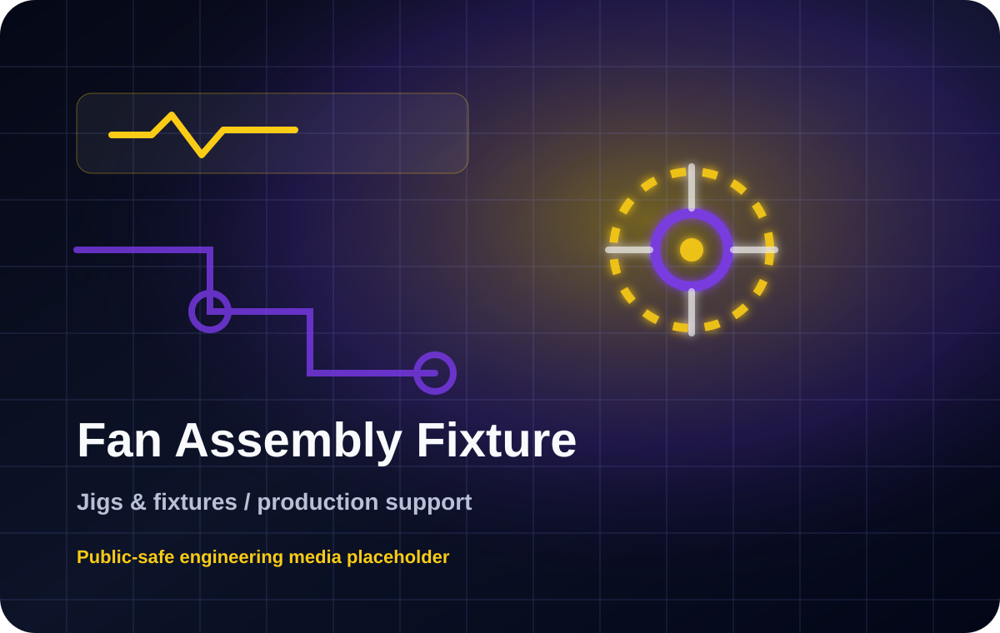

Project Overview
Fixture concept for fan motor assembly work, with attention to nut positioning, shaft oiling, part holding and operator-friendly handling.
Jigs & Fixtures
Fixture concept for fan motor assembly work, with attention to nut positioning, shaft oiling, part holding and operator-friendly handling.

Fixture concept for fan motor assembly work, with attention to nut positioning, shaft oiling, part holding and operator-friendly handling.
Manual assembly needed better part location, repeatability and a lower-cost alternative to fully CNC machined tooling.
Designed the fixture concept, considered manufacturing practicality and validated ideas through practical observation.
Reviewed assembly sequence, contact points, access, torque reaction and manufacturability before prototyping the fixture concept.
Improved assembly support while avoiding unnecessary high-cost fixture manufacturing methods.
Public-safe photos, diagrams and project evidence are being prepared. Confidential factory details are not published.
3D printing can reduce tooling cost when the loading condition and material choice are understood.
Only simplified descriptions and public-safe media should be shown. Do not publish PLC programs, HMI source files, wiring diagrams, exact drawings, dimensions, customer names, factory layouts, production figures or private company documents.